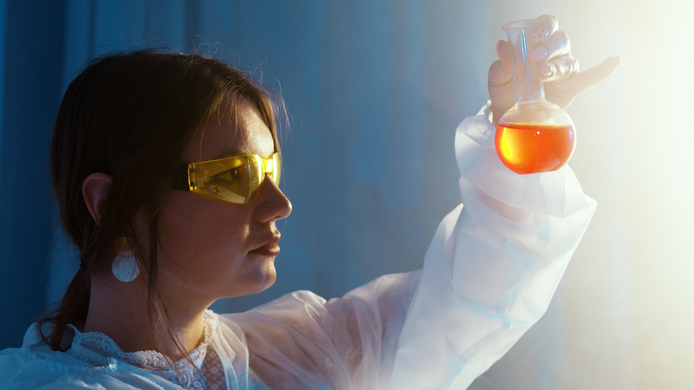

MUNDO SENSORIAL
Mundo sensorial es un lugar donde catamos, evaluamos y analizamos alimentos. Vos podes ser parte de este mundo asombroso y comenzar ser un nuevo panelista para catar distintos alimentos.
Análisis sensorial
El análisis sensorial es el examen de las propiedades organolépticas de un producto realizable con los sentidos humanos. Dicho de otro modo, es la evaluación de la apariencia, olor, aroma, textura y sabor de un alimento o materia prima.